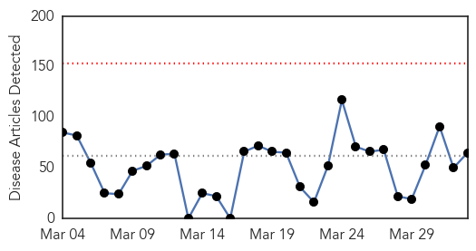
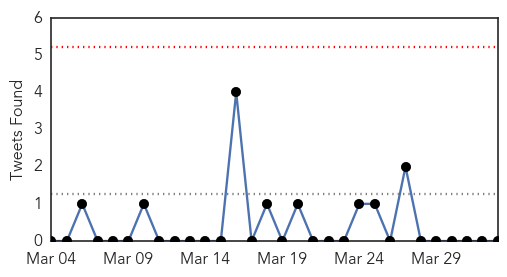
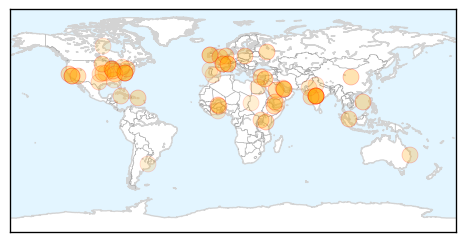
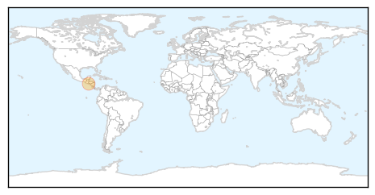

Unknown
30-Day Web Trend
0 alerts, 0 warnings

30-Day Twitter Trend
0 alerts, 0 warnings

Article Locations
Article Confidences
Top Articles:
- 0.975
- Drug-resistant shigellosis stomach bug spreading in U.S.
- 0.969
- Drug-Resistant Stomach Bug Spreading Across the U.S.
- 0.966
- Drug-Resistant Stomach Bug Spreading Across the U.S.
- 0.921
- Burkina Faso government confirms outbreak of bird flu
- 0.918
- UPDATE 1-Top U.S. turkey producer Minnesota finds 4th bird flu case -USDA
- 0.917
- Chicago Tribune
- 0.917
- Chicago Tribune
- 0.917
- Chicago Tribune
- 0.917
- Chicago Tribune
- 0.917
- Chicago Tribune
- 0.917
- Chicago Tribune
- 0.917
- Chicago Tribune
- 0.917
- Chicago Tribune
- 0.917
- Chicago Tribune
- 0.917
- Chicago Tribune
- 0.917
- Chicago Tribune
- 0.917
- Chicago Tribune
- 0.917
- Chicago Tribune
- 0.917
- Chicago Tribune
- 0.917
- Chicago Tribune
- 0.917
- Chicago Tribune
- 0.917
- Chicago Tribune
- 0.917
- Chicago Tribune
- 0.917
- Chicago Tribune
- 0.914
- Mysterious Paralysis In Children Linked To New Strain Of Enterovirus D68
- 0.910
- The world windows to Thailand
- 0.910
- The world windows to Thailand
- 0.904
- Increase in Region 10 malaria cases ‘likely migratory’
- 0.903
- Ciprofloxacin-resistant shigellosis detected in 32 US states
- 0.901
- U.S. faces another superbug outbreak
- 0.869
- Burkina Faso Government Confirms Outbreak Of Bird Flu
- 0.867
- A drug-resistant intestinal illness is spreading in the US
- 0.867
- Top US turkey producer confirms another bird flu case
- 0.859
- Imported drug-resistant stomach bug spreading in US
- 0.858
- Many fall sick after inhaling dust
- 0.850
- Ireland has third highest rate of imported malaria in EU
- 0.845
- Chicken pox, other diseases on the rise among children in Mumbai
- 0.807
- Following one round of tests, more to be screened for tuberculosis at Olathe Northwest HS
- 0.765
- Costs rising over typhoid outbreak in Uganda - Uganda
- 0.760
- Doctor urges public to use free screening
- 0.757
- Ipswich is battling a surge of parvovirus among dogs while vets warn of the dangers of online vaccines
- 0.744
- Unsafe Food Kills Hundreds of Thousands
- 0.725
- Salmonella outbreak on poultry farms investigated
- 0.694
- Superbugs: Tiny Super-Villains That Lurk in Hospitals Across the Nation
- 0.693
- Water at Dole VA Medical Center tests positive for Legionella bacteria
- 0.687
- Bird flu strikes another commercial turkey facility in Minnesota
- 0.681
- Gonorrhea shows a steady rise in Hamilton
- 0.670
- OMA's Dr. Scott Wooder says bosses should stop asking for sick notes
- 0.661
- Duodenoscopes cause of E. coli outbreak in Washington
- 0.629
- Number of Leishmaniasis cases dropped in 2014 due to enhanced efforts
Showing top 50 articles...
Top Tweets:
-
No tweets found for Apr 02, 2015
West Nile Virus
30-Day Web Trend
1 alerts, 0 warnings

30-Day Twitter Trend
1 alerts, 0 warnings

Article Locations
Article Confidences

Top Articles:
Top Tweets:
-
No tweets found for Apr 02, 2015